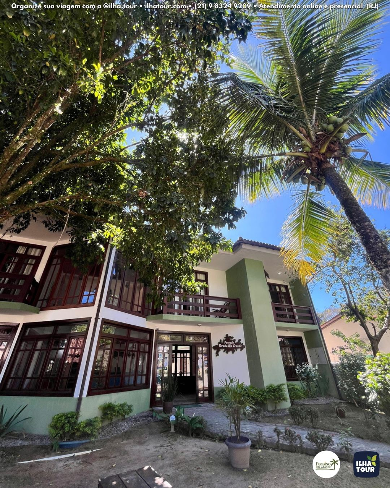
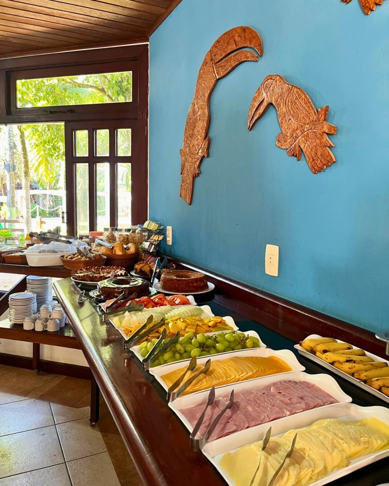
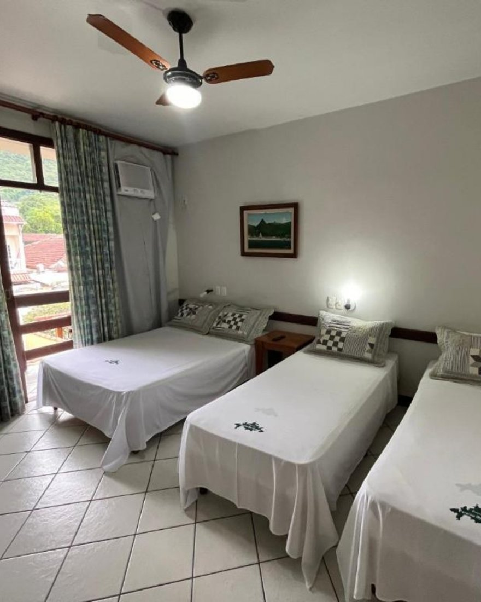

Blog · Hospedagem na Ilha Grande
Tudo que você precisa saber pra dormir bem na Ilha.
Guias práticos sobre onde ficar, como chegar e o que faz uma boa pousada na Vila do Abraão — direto de quem recebe há mais de 20 anos.

Onde ficarOnde se hospedar na Ilha Grande: o guia da Vila do Abraão
Parte alta ou parte baixa? Perto do cais ou no sossego? O que olhar antes de reservar a sua pousada.
 Como chegar
Como chegarComo chegar na Ilha Grande e na Vila do Abraão
De onde saem os barcos, onde deixar o carro e quanto tempo leva até pisar na areia da Vila.

DicasO que faz uma boa pousada na Ilha Grande
Café da manhã, recepção 24h, gerador e localização: os detalhes que separam uma boa estadia de uma dor de cabeça.
HospedagemMelhor região para se hospedar na Ilha Grande
Vila do Abraão, parte alta ou baixa? A gente compara e mostra onde vale a pena ficar.
Hospedagem
Pousada com café da manhã na Ilha Grande: por que faz diferença
Vale a pena o café incluso? O que esperar do café da manhã (e do café da tarde) na Vila do Abraão.

Família & gruposOnde ficar na Ilha Grande com a família e em grupo
Quartos maiores, pousada inteira e localização: como não errar na hospedagem do grupão.